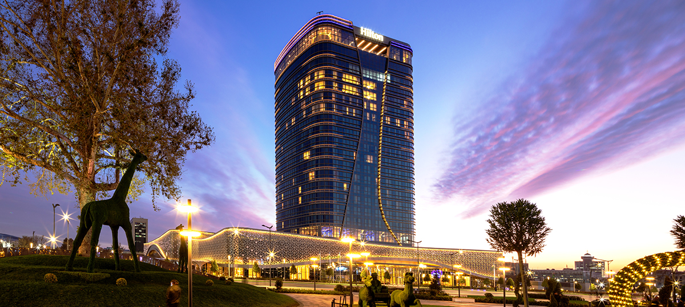
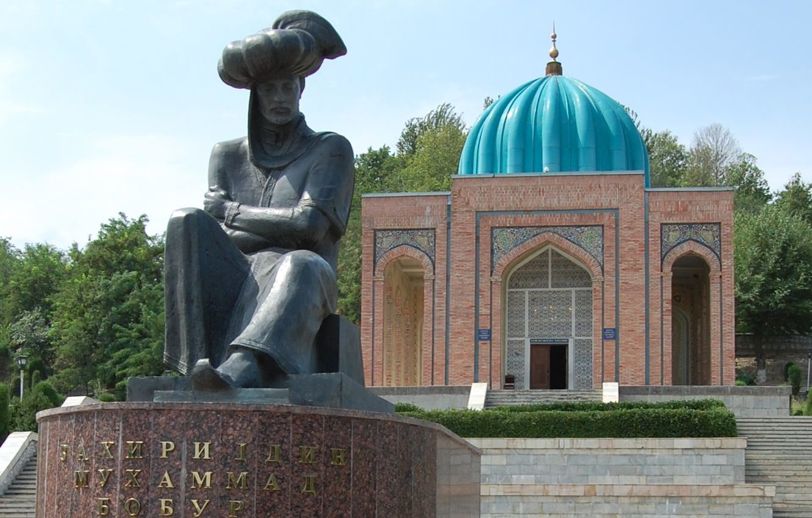

Uzbekistan
O'zbekiston Respublikasi

- Maydonni - 448 924 km2
- Poytaxti - Toshkent shahri
- Davlat tili - O'zbek
- Aholisi - 35 718 705ta odam
- Telefon kodi - 998
- Prezidenti - Shavkat Miromonovich Mirziyoyev
Uzbekistan |
|
| Toshkent shahri |
O'zbekiston Respublikasi
|
| Andijon viloyati | |
| Buxoro viloyati | |
| Farg'ona viloyati | |
| Jizzax viloyati | |
| Xorazm viloyati | |
| Namangan viloyati | |
| Navoiy viloyati | |
| Qashqadaryo viloyati | |
| Samarqand viloyati | |
| Sirdaryo viloyati | |
| Surxondaryo viloyati | |
| Toshkent viloyati | |
| Qoraqalpog'iston Respublikasi | |
Toshkent Oʻzbekistonning poytaxti va eng yirik shahri boʻlib, aholisi boʻyicha Markaziy Osiyodagi eng yirik qadimiy shaharlardan biri hisoblanadi. Oʻzbekistonning shimoli-sharqiy qismida, Qozogʻiston bilan chegaraga yaqin qismda joylashgan boʻlib, maydoni 334,8 km2 (129.3 2) ni tashkil etadi. 2021-yilgi maʼlumotlarga koʻra, Toshkent aholisi 2 694 400 nafar kishini (Oʻzbekiston aholisining qariyb 8 foizi) tashkil etadi[1]. 2018-yilgi maʼlumotlarga koʻra, Toshkent shahrining YIMi $2,74 milliardni tashkil etadi va bu koʻrsatkich Oʻzbekistondagi eng katta YIMga ega shahar boʻlib kelmoqda[4][5]. Milodiy VIII asr oʻrtalarida islomiy taʼsir boshlangunga qadar, Toshkentga sugʻd va turkiy madaniyat taʼsir koʻrsatgan. 1219-yilda Chingizxon Toshkentni vayron qilganidan soʻng, shahar qayta tiklandi va Buyuk Ipak yoʻlidan foyda koʻrdi. 1630-yildan 1729-yilgacha Toshkent shahri Qozoq xonligining rasmiy poytaxti boʻlgan. XVIII—XIX asrlardan boshlab ushbu shahar Qoʻqon xonligi tomonidan zabt etilgunga qadar, mustaqil shahar-davlatga aylangan edi. 1865-yilda Toshkent Rossiya imperiyasi tarkibiga kirdi hamda Turkiston general-gubernatorligi markazi boʻldi. Sovet davrida bu shahar butun Sovet Ittifoqining majburiy deportatsiyasi tufayli katta oʻsish va demografik oʻzgarishlarga guvoh boʻlgan. 1966-yilda boʻlgan Toshkent zilzilasi tufayli Toshkentning katta qismi vayron boʻlgan edi, biroq u namunali Sovet shahri oʻlaroq qayta qurilgan. Oʻsha paytda Toshkent Sovet Ittifoqining Moskva, Leningrad va Kiyev shaharlaridan keyin turadigan toʻrtinchi yirik shahar boʻlgan[6]. Hozirgi kunda, mustaqil Oʻzbekiston poytaxti sifatida, Toshkentda koʻp millatli aholi saqlanib qolgan, ular orasida etnik oʻzbeklar va qozoqlar koʻpchilikni tashkil qiladi. 2009-yilda Toshkentning 2 200 yilligi nishonlandi. Bu munosabat bilan shahar infra va transport tizimi yangilandi.
Andijon viloyati– Oʻzbekiston Respublikasi tarkibidagi viloyat. Fargʻona vodiysining sharqiy qismida. 1941-yil 6-martda tashkil etilgan. Maydoni 4,2 ming km². Aholisi 3 253 501 kishi (2022-yil 1-yanvar holatiga). Andijon viloyatida 14 qishloq tuman, 11 shahar va 95 qishloq fuqarolari yigʻini bor (2000). Markazi — Andijon shahri.[2] viloyati yer yuzasi asosan tekislik. Hozirgi relyefi va yer yuzasidagi jinslar toʻrtlamchi geologik davrning katta-kichik daryolari va irmoqlarining faoliyatidan hosil boʻlgan. Viloyatning gʻarbiy qismi qirli tekislik (bal. 400–500 m), sharqi (Andijon shahridan sharda) Fargʻona va Olay tizmalarining tarmoqlaridan iborat. Andijon viloyati geologik aktiv zonada joylashgan, kuchli zilzilalar bo'lib turadi (qarang Andijon zilzilasi). Ixdimi keskin kontinental, quruq. Togʻ tkzmalari Fargʻona vodiysini sovuq havoning kirib kelishidan toʻsib turganligi uchun qishda Andijon viloyatida ob-havo birmuncha barqaror. Yozi issiq, iyulning oʻrtacha temperaturasi 27,3°, kishi nisbatan sovuq, yanvarning oʻrtacha temperaturasi –3°. Vegetatsiya davri 217 kun. Yiliga 200 – 250 mm yogʻin tushadi. Av. Oʻzbekistonning boshqa viloyatlariga nisbatan suv resurslariga boy. Daryolari yogʻindan, togʻlarlagi koʻp yillik qor va muzliklardan suv oladi. Asosiy daryosi – Qoradaryo (Sirdaryo irmoqlaridan biri). Uning irmoqlari – Moylisuv, Oqboʻra, Aravonsoy va boshqa Av. daryolarining suvi sugʻorish uchun ishlatiladi. Tuproqlari boʻz, qoʻngʻir, oʻtloqi, oʻtloqi-botqoq tuproqlar, qumtosh, mergel, less va chaqirtoshlardan iborat. Bahorda adirlar efemer oʻsimliklar bilan qoplanadi. Av.ning ekin ekilmaydigan tekislik qismida shuvoq-shoʻra oʻsimliklari, togʻ yon bagʻirlarida pista, bodom oʻsadi. Yovvoyi hayvonlar (buri, tulki, qobon va boshqalar) kam uchraydi; sudraluvchilar, kemiruvchilar, qushlar, suv havzalarida baliqlar bor.Aholisining koʻpchiligini oʻzbeklar tashkil etadi. Qirgʻizlar, Tojiklar, Uygʻurlar, Ruslar, Koreyslar, Qangli VA boshqalar ham bor. Rossiya Qoʻqon xonligini bosib olgach, bu yerga rus, ukrain, tatar, arman, yahudiy va boshqa millat vakillari ko'chib kelgan. 1 km² ga oʻrtacha 517 kishi toʻgʻri keladi. Milliy tarkibi: oʻzbeklar – 86,8 %, qirgʻizlar 3,8 %, tatarlar 3,1 %, Qanglilar 2 %, ruslar 2 %. Shaharliklar 657,7 ming kishi, qishloq aholisi 1539,2 ming kishi (2000).
